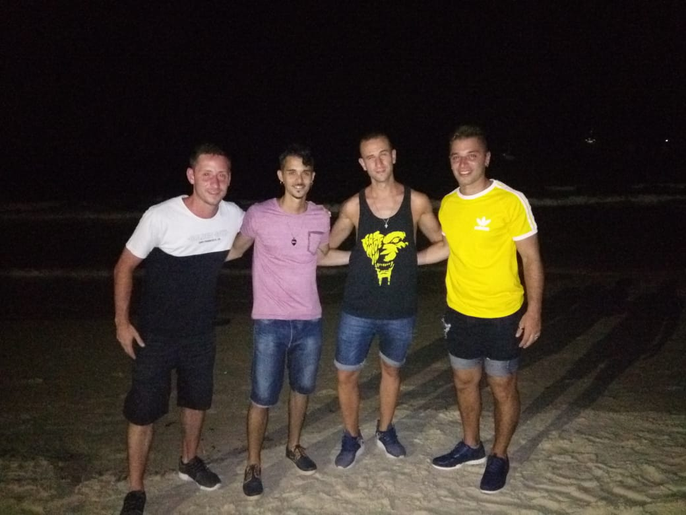
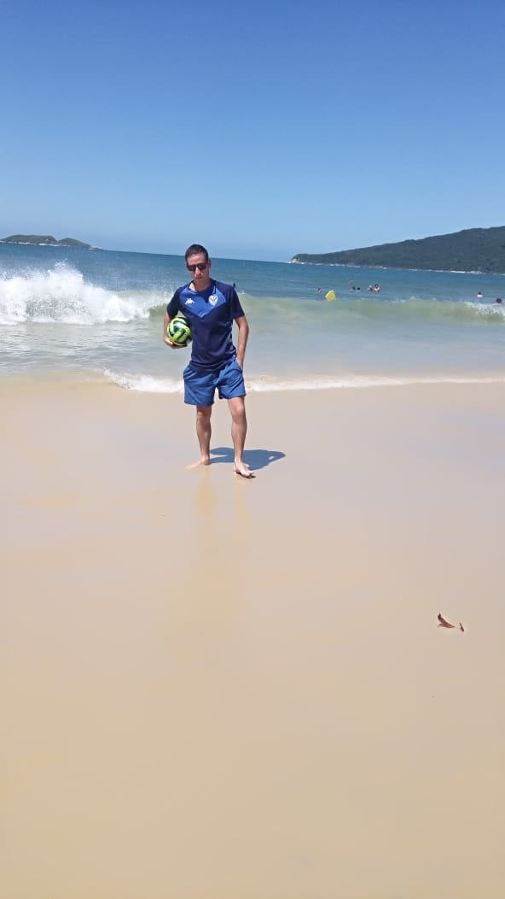
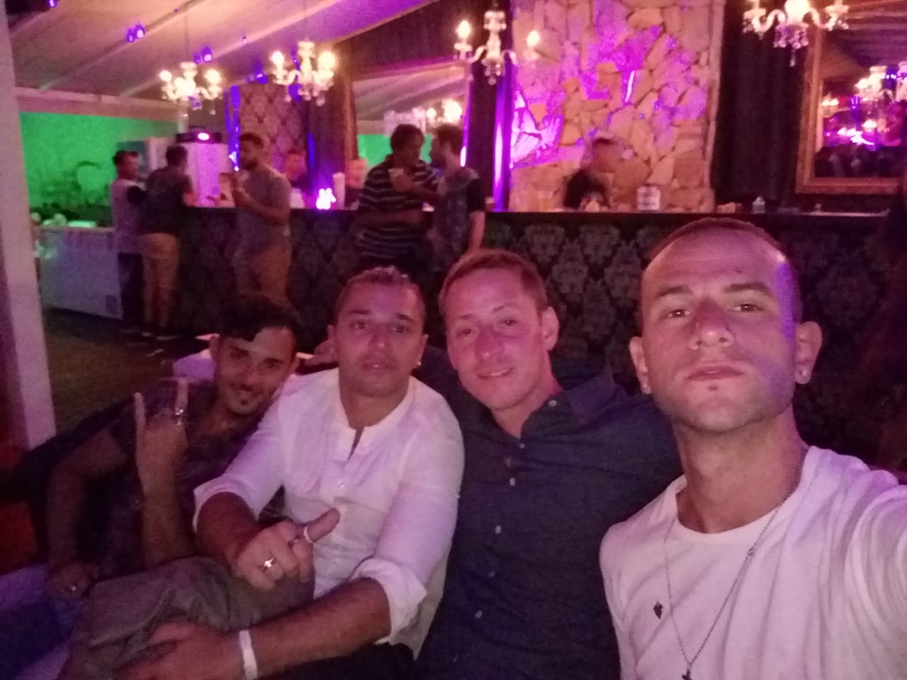
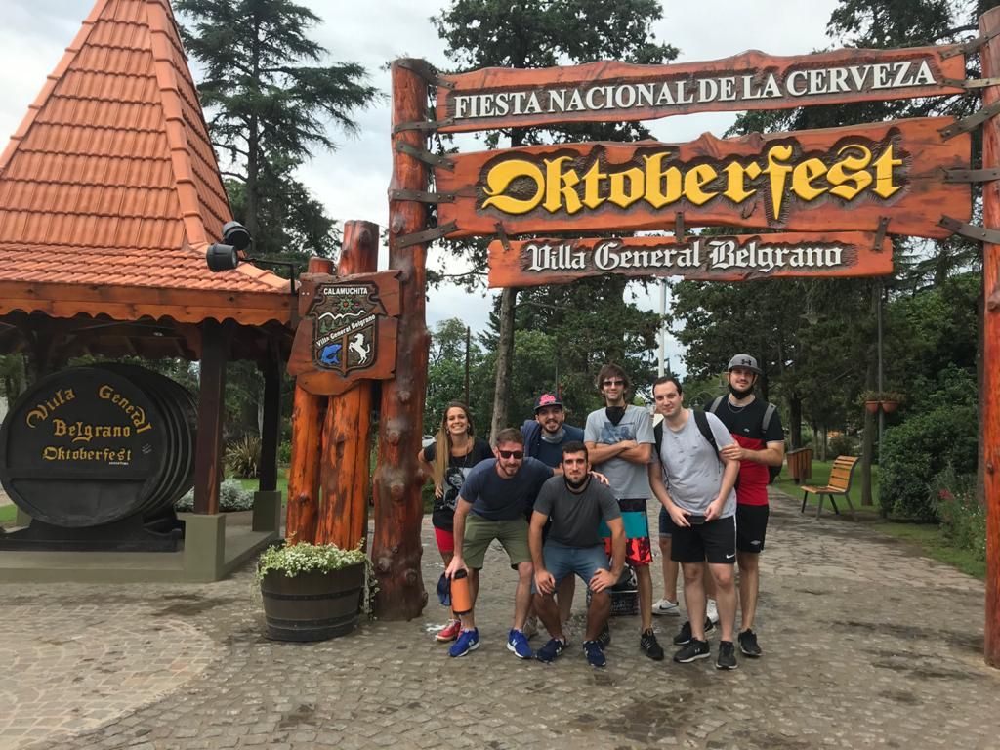
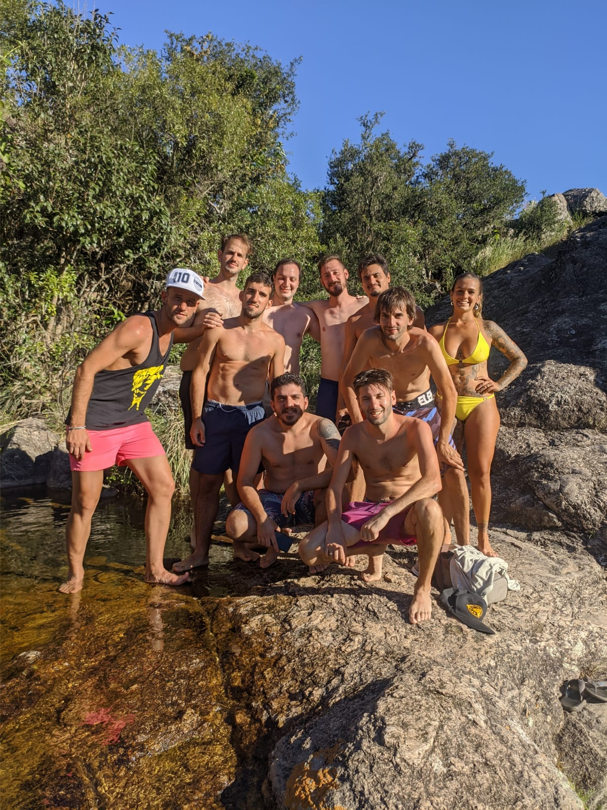

Vacaciones con Amigos
Brasil
Tener la posibilidad de viajar con tus amigos de vacaciones es algo que siempre deseamos a hacer, nosotros lo pudimos hacer y valio la pena. Arrancamos con el viaje entre 4 amigos desde Buenos Aires, Argentina, hasta la ciudad de Florianopolis, Brasil. Nos trasladamos en micro, el viaje duro aproximadamente 24 horas. Primero nos hospedamos en Bombinas, hermosa ciudad, dueña de una tranquilidad increible con unas playas de ensueño. Sin lugar a dudas disfrutamos mucho nuestros dias ahi. En una de nuestras salidas nocturnas, nos dimos el placer de conocer a un artista local de Brasil, mas conocido como Prefeitao, facinados con su espectaculo, entregando toda su obra en una discoteca ubicada en Porto Belo.
Nuesto viaje continuo en la Cannasvieiras, una ciudad mas poblada por el turismo, sobre todo de Argentina, con mucho mas movimiento y rodeado de nuevas playas, muy lindas pero ninguna comparada con las que encontramos en Bombinas. Igual aprovechamos para conocer mas la ciudad, su cultura, sus comidas y su movimiento por las noches. Una de las excursiones la vivimos en un barco que partia hacia un lugar alejado de la costa, en donde pudimos festejar al ritmo de la musica, tambien nos permitieron arrojarnos al medio del mar y poder nadar, obviamente todo controlado con personal preparado para la situacion.
 Cordoba
Nuevamente decicimos partir entre amigos, esta vez eramos 11 personas, como el destino era mas proximo desde nuestra ubicacion la ciudad de Buenos Aires hasta la ciudad de Cordoba, todo en Argentina El dirigirse en auto tenia como objetivo lograr conocer mas los paisajes de Cordoba, y lo logramos. Nuestro lugar de hospedaje fue en Carlos Paz, un hermoso lugar. Nuestra primera excursion fue en Villa General Belgrano en donde conocimos la ciudad y disfrutamos mucho. Otro de los dias, en donde el clima nos acompaño fuimos hacia el Balneario de Tanti, en donde realizamos trekking para conocer mas de ese asombroso Balneario, que nos deposito en el Pozo del Indio, una laguna de unos 6 metros de profundidad y una altura de mas de 12 metros, varios fuimos valientes y nos tiramos desde una altura intermedia, pero habia gente mas valiente en ese viaje que tuvo las agallas de probar su adrenalina y sus miedos.
 